WEB アプリ
簡易機能 10万円から・標準機能 30万円から
今の Excel やスプレッドシートを、スマホでも使える画面に（簡易機能）。ログインと権限、予約や現場の管理など、複数の業務をまとめる社内システムに（標準機能）。スマホのホーム画面にも入れられます。
予約・現場・お客さんの管理を、WEB アプリにします。社長・社員・お客さんで見える範囲を分け、外からもスマホのホーム画面から使えます。IT 担当のいない小さな会社のための仕組みです。
今の作業に近いものを選ぶと、その見本（動画と画面）に移ります。データはすべて架空です。
今お使いの道具と、困りごとの大きさに合わせて選びます。
簡易機能 10万円から・標準機能 30万円から
今の Excel やスプレッドシートを、スマホでも使える画面に（簡易機能）。ログインと権限、予約や現場の管理など、複数の業務をまとめる社内システムに（標準機能）。スマホのホーム画面にも入れられます。
スプレッドシートと Excel は、記録・通知・書類の作成など1つの機能ごとのお値段です。いくつかの機能をまとめて1つの仕組みにする場合は、ご相談ください。
まずスプレッドシートや Excel で始め、データがたまり人が増えたら WEB アプリに移す進め方もできます。スプレッドシートで足りる場合は、そちらをご提案します。
どちらもパスワードなしで、架空のデータを使って試せます。WEB で管理するよさはこちら、スマホへの入れ方はこちらで説明しています。
入る人によって見える範囲が変わる、現場管理の WEB アプリです。お客さんには進み具合だけの専用ページを用意できます
ブラウザで試すパスワードなし・架空のデータで動きます
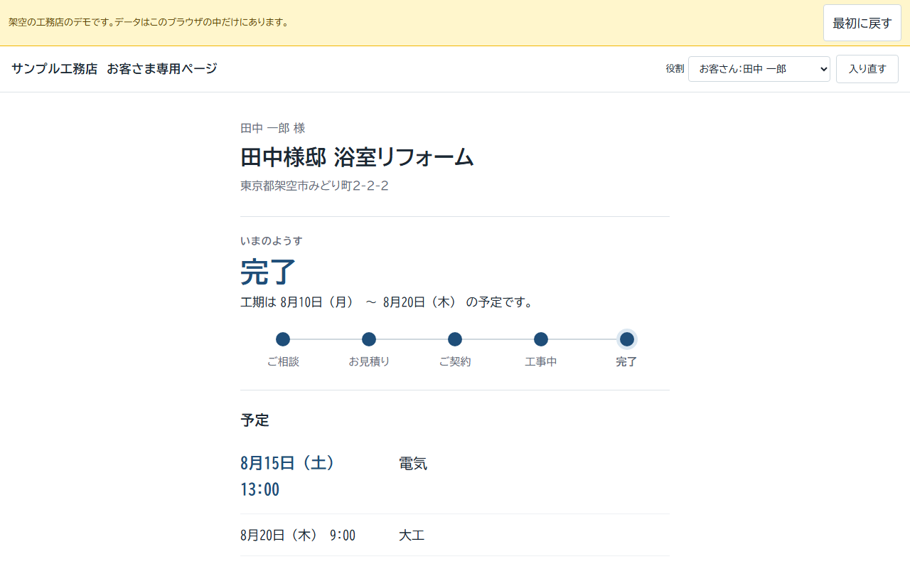
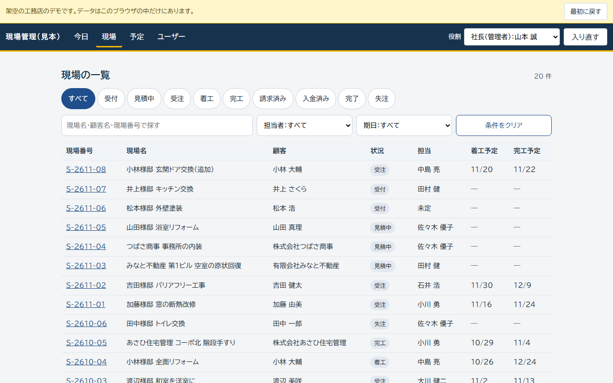
電話・LINE・紙でバラバラの予約を、画面1つに。お客さんは空いている日時を選んで予約し、お店は予約表とカルテで管理できます。ネイルサロンと料理教室の2つの例で動きます
ブラウザで試すパスワードなし・架空のデータで動きます


いきなり大きなシステムにしなくても大丈夫です。困りごと1つから始めて、育てていけます。
スプレッドシートや Excel で、困りごと1つを自動に。
1機能2万円から・機能の統合はご相談
顧客・現場・見積が、1つの台帳にそろっていきます。
人が増え、見せる範囲を分けたくなったら。見本の台帳は WEB アプリと列をそろえてあり、データを移しやすい作りです。
簡易機能 10万円から・標準機能 30万円から
外からスマホで使い、お客さんには専用ページや24時間の予約を。
従業員10人ほどの工務店を例にした6つと、卸の見積・納品・請求の Excel が1つ。どれも1〜2分の動画で、実際の画面を紹介しています。
削減時間は、月の件数と1件あたりの時間を仮に置いた試算で、時給2,000円で換算しています。お客さんの実際の数字で計算し直します。
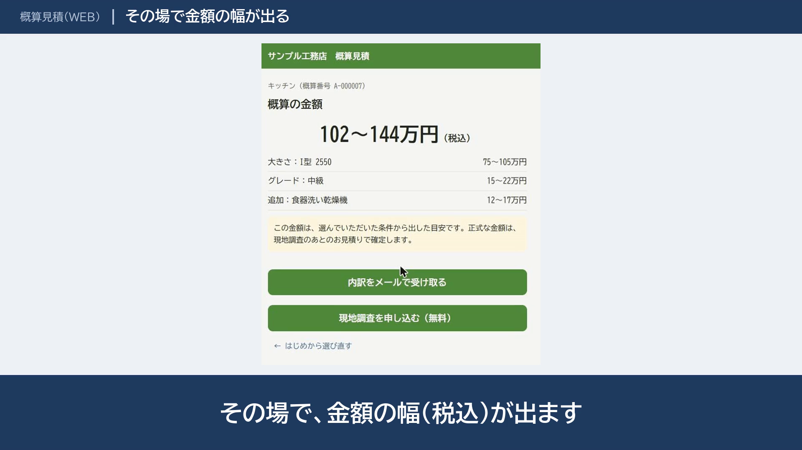
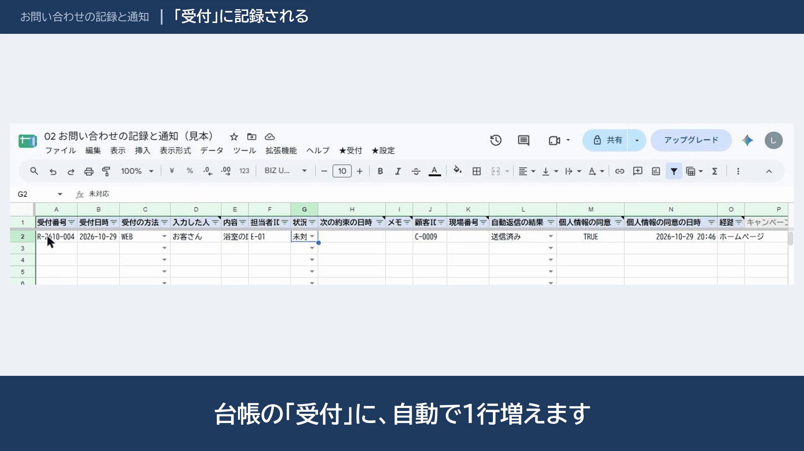
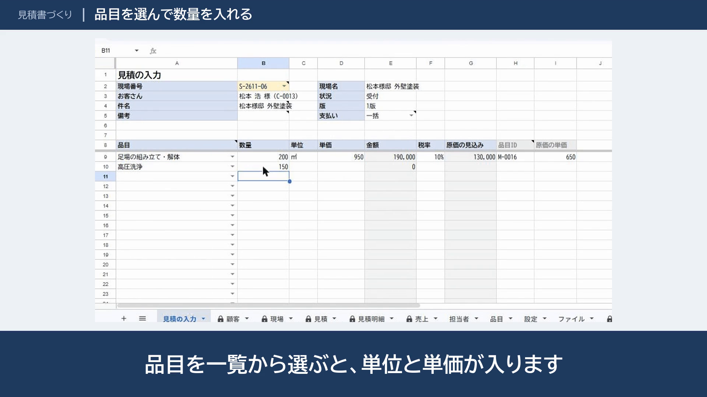
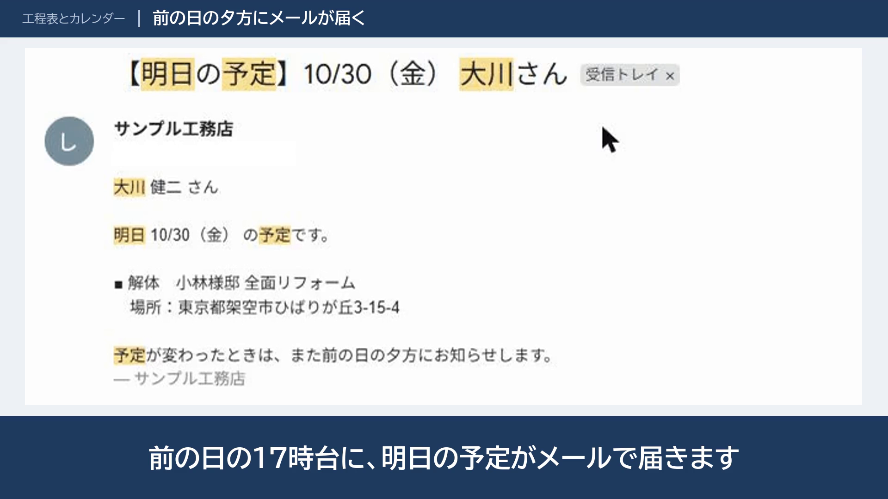
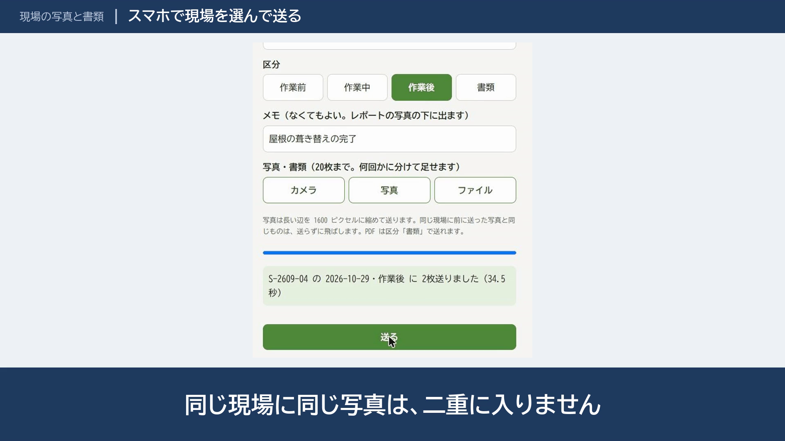
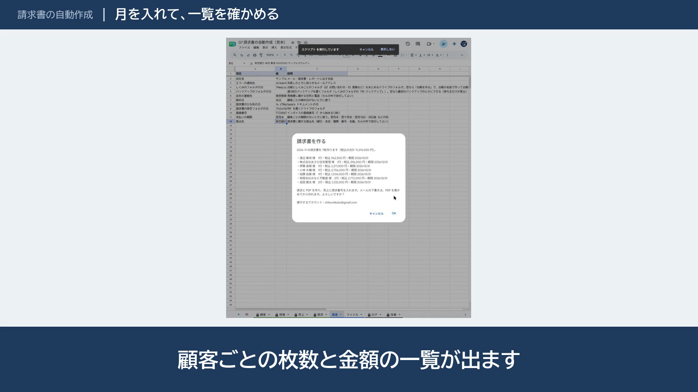
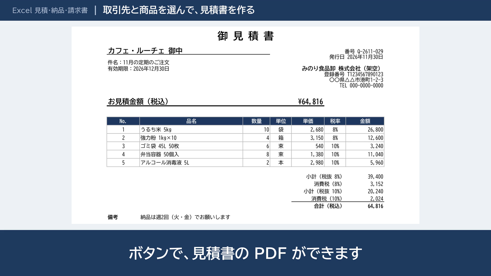
このページと同じ見本を使い、ねらいを変えて作ったページの例です。業種で選ぶ、触って試す、前と後を見せる、段階で見せる、の4つです。
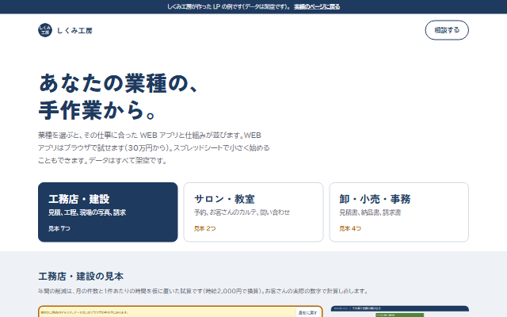
業種で選ぶ工務店・サロン・卸の3つから選ぶと、その業種の WEB アプリと仕組みが並びます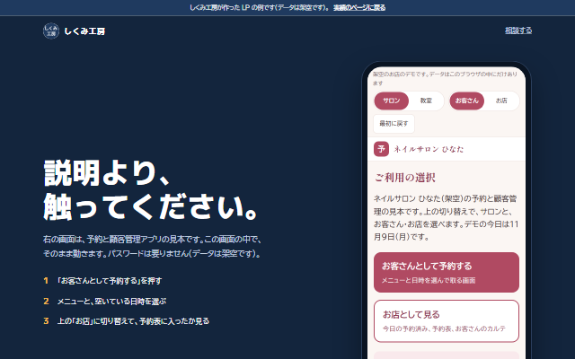
触って試す一番上で予約アプリがスマホの枠の中で動きます。説明より先に、触ってもらう形です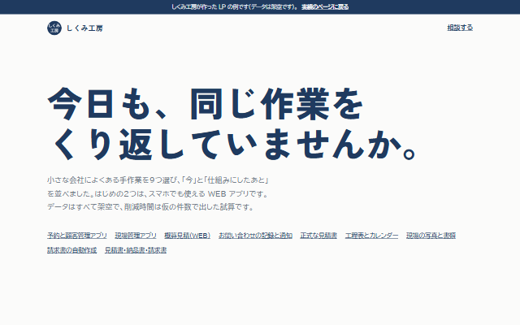
前と後を見せる見本1つで1画面。「今」の困りごとを大きな字で見せ、仕組みにしたあとを続けます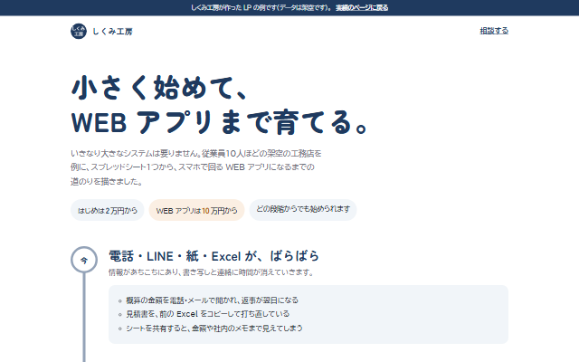
段階で見せるスプレッドシートで小さく始めて、WEB アプリとスマホまで育てる道のりを見せます会社やお店を紹介する、簡単なホームページの作成もご相談いただけます。
やりとりは、ランサーズまたはココナラのメッセージで進めます。
今の作業をうかがい、自動化できるところをご提案します。
作る範囲・納期・金額・直しの回数を、文書でお出しします。
お客さまの環境の中で作り、手順書をお渡しします。
不具合は無料で直します。その後の保守もご相談ください。
ご相談は無料です。ランサーズまたはココナラのメッセージからお送りください。お返事は、平日は翌日まで、土日は月曜までにします。